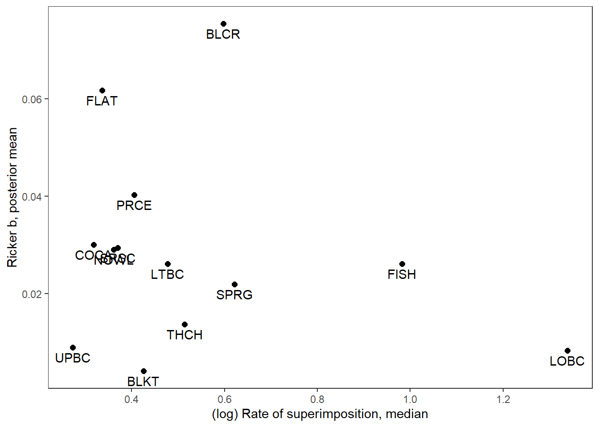

Code
library(tidyverse)
library(ggmcmc)
library(R2jags)library(tidyverse)
library(ggmcmc)
library(R2jags)Load data and calculate rate of superimposition as the (average) number of redds divided by the number of clusters, where each cluster contains 1+ redd. See Baldock et al. (2023, CJFAS) for details on historical redd count program. The rate of superimposition (sup) thus represents the degree to which redds are clustered within each year and stream, with higher values indicating increased rates of clustering/superimposition (minimum value = 1).
Based on the past study, we know that observers both underestimate the number of clusters (detection probability = 0.65) and overestimate the number of redds per cluster. But these antagonistic error sources cancel each other out, such that observed redd counts accurately reflect census redd abundance. Thus, we could correct clusters by detection probability (divide by 0.65), while retaining the raw avgredds data. But this would affect all years and populations equally, and so relative rates of superimposition among streams and years would be the same. Thus, no sense in correcting.
Nevertheless, the ~complex error structure assocaited with redd count data begs the question of the utility of redd count data alone for describing rates of superimposition. A likely better way to describe superimposition would be something like #females per redd or per cluster, but we only have independent spawner/female abundance data for a single stream, Lower Bar BC.
dat_rc <- read_csv("data/ReddCounts_WGFD_1971-2021_cleaned.csv") %>%
filter(!stream %in% c("Cody", "Christiansen", "Dave", "Laker")) %>%
mutate(sup = avgredds / clusters) %>%
group_by(stream) %>%
complete(year = min(year):max(year)) %>%
ungroup()
head(dat_rc)# A tibble: 6 × 16
stream year date doy miles kms lat long clusters minredds
<chr> <dbl> <date> <dbl> <dbl> <dbl> <dbl> <dbl> <dbl> <dbl>
1 3 Channel 1973 1973-07-02 183 2.61 4.20 43.6 -111. 81 130
2 3 Channel 1974 1974-07-02 183 2.61 4.20 43.6 -111. 106 144
3 3 Channel 1975 1975-07-18 199 2.61 4.20 43.6 -111. 84 NA
4 3 Channel 1976 1976-07-07 189 2.61 4.20 43.6 -111. 246 293
5 3 Channel 1977 1977-07-06 187 2.61 4.20 43.6 -111. 229 323
6 3 Channel 1978 1978-07-18 199 2.61 4.20 43.6 -111. 193 305
# ℹ 6 more variables: maxredds <dbl>, avgredds <dbl>, ttrout <dbl>,
# reddspermile <dbl>, reddsperkm <dbl>, sup <dbl>View distributions of superimposition rate by population
dat_rc %>%
ggplot() +
geom_boxplot(aes(x = stream, y = sup), fill = "grey80") +
xlab("Population") + ylab("Rate of superimposition\n(avg. redds / clusters)") +
theme_bw() +
theme(panel.grid = element_blank(), axis.text.x = element_text(angle = 45, vjust = 1, hjust = 1))log-scale
dat_rc %>%
ggplot() +
geom_boxplot(aes(x = stream, y = log(sup)), fill = "grey80") +
xlab("Population") + ylab("(log) Rate of superimposition\n(avg. redds / clusters)") +
theme_bw() +
theme(panel.grid = element_blank(), axis.text.x = element_text(angle = 45, vjust = 1, hjust = 1))View time series of superimposition rates: lots of variation both within and among streams
dat_rc %>%
ggplot(aes(x = year, y = sup)) +
geom_point() +
geom_line() +
facet_wrap(~stream) +
xlab("Year") + ylab("Rate of superimposition\n(avg. redds / cluster)") +
theme_bw() + theme(panel.grid.minor = element_blank())Are rates of superimposition related to redd density? Sorta hokey b/c both superimposition rate and redd density are both calculated using avgredds
Among populations with LOESS
dat_rc %>%
ggplot() +
geom_smooth(aes(x = reddsperkm, y = sup), color = "black") +
geom_point(aes(x = reddsperkm, y = sup, color = stream)) +
#geom_line() +
#facet_wrap(~stream) +
xlab("Redds per km") + ylab("Rate of superimposition\n(avg. redds / clusters)") +
theme_bw() + theme(panel.grid = element_blank()) #+ #ggpubr::stat_cor()By stream with linear regression smoothers
dat_rc %>%
ggplot(aes(x = reddsperkm, y = sup)) +
geom_point(aes(color = stream)) +
geom_smooth(method = "lm", color = "grey40") +
#geom_line() +
facet_wrap(~stream, scales = "free") +
xlab("Redds per km") + ylab("Rate of superimposition\n(avg. redds / clusters)") +
theme_bw() + theme(panel.grid = element_blank(), legend.position = "none") +
ggpubr::stat_cor()Annual redd count data (avgredds and clusters) are summarized from spawning ground surveys where observers first map redd clusters then estimate the number of redds in each cluster. Annual rates of superimposition can more ~accurately be estimated from these maps by first calculating the rate of superimposition for each cluster, then averaging over all clusters. I previously digitized maps for two streams: Lower Bar BC and Upper Bar BC. Calculate annual superimposition rates (mean and variance) from these data then compare to the “coarse” metrics derived from summarized redd count data. Make sure we see a linear/1:1 relationship
Load data and summarize by stream and year.
dat_maps <- read_csv("data/WGFD Historical redd maps digitized.csv") %>%
filter(section == "main") %>%
mutate(stream = recode(stream, "lower" = "Lower Bar BC", "upper" = "Upper Bar BC"),
rpc = rowMeans(select(., min, max))) %>%
group_by(stream, year) %>%
summarize(rpc_mean = mean(rpc),
rpc_025 = quantile(rpc, probs = 0.025, na.rm = TRUE),
rpc_975 = quantile(rpc, probs = 0.975, na.rm = TRUE)) %>%
ungroup()
dat_maps# A tibble: 48 × 5
stream year rpc_mean rpc_025 rpc_975
<chr> <dbl> <dbl> <dbl> <dbl>
1 Lower Bar BC 1971 4.33 1 16.5
2 Lower Bar BC 1976 3.81 1 9
3 Lower Bar BC 1978 3.82 1.41 8.5
4 Lower Bar BC 1981 2.5 1.15 3.45
5 Lower Bar BC 1983 2.33 1.5 3.88
6 Lower Bar BC 1985 4.86 1 15.6
7 Lower Bar BC 1987 2.61 1.5 5
8 Lower Bar BC 1988 2.45 1 5.38
9 Lower Bar BC 1989 4.81 1 15
10 Lower Bar BC 1990 4.28 1 14.7
# ℹ 38 more rowsView time series
dat_maps %>%
ggplot() +
geom_point(aes(x = year, y = rpc_mean)) +
geom_errorbar(aes(x = year, ymin = rpc_025, ymax = rpc_975)) +
facet_wrap(~stream, nrow = 2) +
theme_bw() + theme(panel.grid = element_blank()) +
xlab("Year") + ylab("Redds per cluster, mean and 95% quantile interval")Compare with coarse metrics
dat_maps %>%
left_join(dat_rc %>% select(stream, year, sup)) %>%
ggplot(aes(x = rpc_mean, y = sup)) +
geom_abline(intercept = 0, slope = 1, linetype = "dashed") +
geom_point() +
geom_smooth(method = "lm") +
facet_wrap(~stream) +
theme_bw() + theme(panel.grid = element_blank()) +
xlab("Mean redds per cluster (maps)") + ylab("Rate of superimpostion (summarized)")Good news, rates of superimposition derived from the summarized data accurately and ~precisely reflect mean rates of superimposition derived from the more detailed redd mapping efforts.
Population order and short names
nametib <- tibble(Population = c(1:13),
stream = unique(dat_rc$stream),
stream_short = c("THCH", "BLKT", "BLCR", "COCA", "FISH", "FLAT", "LTBC", "LOBC", "NOWL", "PRCE", "SRSC", "SPRG", "UPBC"))
nametib# A tibble: 13 × 3
Population stream stream_short
<int> <chr> <chr>
1 1 3 Channel THCH
2 2 Blacktail BLKT
3 3 Blue Crane BLCR
4 4 Cowboy Cabin COCA
5 5 Fish FISH
6 6 Flat FLAT
7 7 Little Bar BC LTBC
8 8 Lower Bar BC LOBC
9 9 Nowlin NOWL
10 10 Price PRCE
11 11 Snake River Side Channel SRSC
12 12 Spring SPRG
13 13 Upper Bar BC UPBC Load fitted YCT Ricker stock-recruit model and coerce to ggs object
mod_01pb <- readRDS("C:/Users/jbaldock/OneDrive - DOI/Documents/WyACT/YCT-ReddCounts-Ricker/Model output/ReddCountsRicker_Phase1_Age01p_winvar_AgeSpecMgdPeakMag.RDS")
mod_gg <- ggs(as.mcmc(mod_01pb), keep_original_order = TRUE)Get Ricker b’s and summarize: posterior mean and 95% credible intervals
mod_gg_B <- mod_gg %>%
filter(Parameter %in% paste("B[", 1:13, "]", sep = "")) %>%
mutate(Population = parse_number(as.character(Parameter))) %>%
left_join(nametib)
mod_gg_B_summ <- mod_gg_B %>%
group_by(Population, stream, stream_short) %>%
summarize(B_mean = mean(value),
B_025 = quantile(value, probs = 0.025),
B_975 = quantile(value, probs = 0.975)) %>%
ungroup()Plot posterior means and 95% credible intervals
mod_gg_B_summ %>%
ggplot() +
geom_point(aes(x = stream, y = B_mean)) +
geom_errorbar(aes(x = stream, ymin = B_025, ymax = B_975), width = 0.2) +
xlab("Population") + ylab("Ricker b (posterior mean and 95% CI)") +
theme_bw() +
theme(panel.grid = element_blank(), axis.text.x = element_text(angle = 45, vjust = 1, hjust = 1))Summarize superimposition data and join with summarized Ricker b’s
supricker <- dat_rc %>%
# filter(year < 2000) %>%
group_by(stream) %>%
summarize(sup_med = median(sup, na.rm = TRUE),
sup_025 = quantile(sup, probs = 0.25, na.rm = TRUE),
sup_975 = quantile(sup, probs = 0.75, na.rm = TRUE),
logsup_med = median(log(sup), na.rm = TRUE),
logsup_025 = quantile(log(sup), probs = 0.25, na.rm = TRUE),
logsup_975 = quantile(log(sup), probs = 0.75, na.rm = TRUE)) %>%
ungroup() %>%
left_join(mod_gg_B_summ)
supricker# A tibble: 13 × 12
stream sup_med sup_025 sup_975 logsup_med logsup_025 logsup_975 Population
<chr> <dbl> <dbl> <dbl> <dbl> <dbl> <dbl> <dbl>
1 3 Channel 1.77 1.63 2.05 0.573 0.486 0.719 1
2 Blacktail 1.68 1.31 2.00 0.520 0.268 0.694 2
3 Blue Cra… 1.78 1.65 1.95 0.574 0.503 0.670 3
4 Cowboy C… 1.44 1.34 1.83 0.365 0.296 0.602 4
5 Fish 2.48 1.91 2.79 0.908 0.648 1.02 5
6 Flat 1.45 1.28 1.82 0.375 0.246 0.602 6
7 Little B… 1.78 1.54 2.05 0.575 0.434 0.717 7
8 Lower Ba… 2.70 2.33 3.89 0.992 0.846 1.36 8
9 Nowlin 1.47 1.35 1.75 0.383 0.303 0.562 9
10 Price 1.54 1.42 1.69 0.431 0.350 0.525 10
11 Snake Ri… 1.36 1.19 1.64 0.306 0.177 0.491 11
12 Spring 1.70 1.50 1.86 0.531 0.403 0.622 12
13 Upper Ba… 1.37 1.23 1.66 0.312 0.203 0.506 13
# ℹ 4 more variables: stream_short <chr>, B_mean <dbl>, B_025 <dbl>,
# B_975 <dbl>Plot relationship with error bars
supricker %>%
ggplot() +
geom_errorbar(aes(x = logsup_med, ymin = B_025, ymax = B_975), width = 0.02, color = "grey50") +
geom_errorbarh(aes(xmin = logsup_025, xmax = logsup_975, y = B_mean), height = 0.002, color = "grey50") +
geom_point(aes(x = logsup_med, y = B_mean), size = 2) +
xlab("(log) Rate of superimposition, median and 50% quantile interval") + ylab("Ricker b, posterior mean and 95% credible interval") +
theme_bw() + theme(panel.grid = element_blank())With labels
supricker %>%
ggplot(aes(x = logsup_med, y = B_mean)) +
geom_point(size = 2) +
geom_text(aes(label = stream_short), vjust = 1.5) +
xlab("(log) Rate of superimposition, median") + ylab("Ricker b, posterior mean") +
theme_bw() + theme(panel.grid = element_blank())Only use redd count data prior to 2000 to calculate population-level median rate of superimposition
Summarize superimposition data and join with summarized Ricker b’s
supricker <- dat_rc %>%
filter(year < 2000) %>%
group_by(stream) %>%
summarize(sup_med = median(sup, na.rm = TRUE),
sup_025 = quantile(sup, probs = 0.25, na.rm = TRUE),
sup_975 = quantile(sup, probs = 0.75, na.rm = TRUE),
logsup_med = median(log(sup), na.rm = TRUE),
logsup_025 = quantile(log(sup), probs = 0.25, na.rm = TRUE),
logsup_975 = quantile(log(sup), probs = 0.75, na.rm = TRUE)) %>%
ungroup() %>%
left_join(mod_gg_B_summ)
supricker# A tibble: 13 × 12
stream sup_med sup_025 sup_975 logsup_med logsup_025 logsup_975 Population
<chr> <dbl> <dbl> <dbl> <dbl> <dbl> <dbl> <dbl>
1 3 Channel 1.67 1.41 1.92 0.514 0.345 0.652 1
2 Blacktail 1.53 1.22 1.89 0.426 0.196 0.638 2
3 Blue Cra… 1.82 1.64 2.11 0.597 0.494 0.746 3
4 Cowboy C… 1.38 1.27 1.47 0.318 0.237 0.387 4
5 Fish 2.67 2.50 3.22 0.982 0.918 1.17 5
6 Flat 1.40 1.26 1.53 0.336 0.234 0.426 6
7 Little B… 1.61 1.45 1.77 0.478 0.369 0.571 7
8 Lower Ba… 3.81 2.51 4.32 1.34 0.922 1.46 8
9 Nowlin 1.44 1.33 1.52 0.362 0.284 0.419 9
10 Price 1.50 1.39 1.64 0.406 0.330 0.492 10
11 Snake Ri… 1.45 1.23 1.76 0.370 0.205 0.567 11
12 Spring 1.86 1.69 1.94 0.622 0.522 0.661 12
13 Upper Ba… 1.31 1.21 1.42 0.273 0.194 0.352 13
# ℹ 4 more variables: stream_short <chr>, B_mean <dbl>, B_025 <dbl>,
# B_975 <dbl>Plot relationship with error bars
supricker %>%
ggplot() +
geom_errorbar(aes(x = logsup_med, ymin = B_025, ymax = B_975), width = 0.02, color = "grey50") +
geom_errorbarh(aes(xmin = logsup_025, xmax = logsup_975, y = B_mean), height = 0.002, color = "grey50") +
geom_point(aes(x = logsup_med, y = B_mean), size = 2) +
xlab("(log) Rate of superimposition, median and 50% quantile interval") + ylab("Ricker b, posterior mean and 95% credible interval") +
theme_bw() + theme(panel.grid = element_blank())With labels
supricker %>%
ggplot(aes(x = logsup_med, y = B_mean)) +
geom_point(size = 2) +
geom_text(aes(label = stream_short), vjust = 1.5) +
xlab("(log) Rate of superimposition, median") + ylab("Ricker b, posterior mean") +
theme_bw() + theme(panel.grid = element_blank())
Only use redd count data after 2000 to calculate population-level median rate of superimposition
Summarize superimposition data and join with summarized Ricker b’s
supricker <- dat_rc %>%
filter(year >= 2000) %>%
group_by(stream) %>%
summarize(sup_med = median(sup, na.rm = TRUE),
sup_025 = quantile(sup, probs = 0.25, na.rm = TRUE),
sup_975 = quantile(sup, probs = 0.75, na.rm = TRUE),
logsup_med = median(log(sup), na.rm = TRUE),
logsup_025 = quantile(log(sup), probs = 0.25, na.rm = TRUE),
logsup_975 = quantile(log(sup), probs = 0.75, na.rm = TRUE)) %>%
ungroup() %>%
left_join(mod_gg_B_summ)
supricker# A tibble: 13 × 12
stream sup_med sup_025 sup_975 logsup_med logsup_025 logsup_975 Population
<chr> <dbl> <dbl> <dbl> <dbl> <dbl> <dbl> <dbl>
1 3 Channel 1.88 1.83 2.05 0.633 0.605 0.719 1
2 Blacktail 1.93 1.74 2.12 0.659 0.553 0.751 2
3 Blue Cra… 1.71 1.68 1.82 0.539 0.519 0.597 3
4 Cowboy C… 1.85 1.45 2.13 0.614 0.373 0.756 4
5 Fish 1.99 1.83 2.15 0.687 0.604 0.766 5
6 Flat 2.07 1.74 2.09 0.729 0.555 0.737 6
7 Little B… 2.02 2 2.12 0.703 0.693 0.754 7
8 Lower Ba… 2.48 2.27 3.75 0.910 0.820 1.32 8
9 Nowlin 1.80 1.77 1.84 0.589 0.569 0.612 9
10 Price 1.96 1.81 2.11 0.660 0.581 0.739 10
11 Snake Ri… 1.19 1.18 1.31 0.176 0.168 0.268 11
12 Spring 1.48 1.45 1.65 0.389 0.371 0.499 12
13 Upper Ba… 1.77 1.38 1.94 0.568 0.322 0.664 13
# ℹ 4 more variables: stream_short <chr>, B_mean <dbl>, B_025 <dbl>,
# B_975 <dbl>Plot relationship with error bars
supricker %>%
ggplot() +
geom_errorbar(aes(x = logsup_med, ymin = B_025, ymax = B_975), width = 0.02, color = "grey50") +
geom_errorbarh(aes(xmin = logsup_025, xmax = logsup_975, y = B_mean), height = 0.002, color = "grey50") +
geom_point(aes(x = logsup_med, y = B_mean), size = 2) +
xlab("(log) Rate of superimposition, median and 50% quantile interval") + ylab("Ricker b, posterior mean and 95% credible interval") +
theme_bw() + theme(panel.grid = element_blank())With labels
supricker %>%
ggplot(aes(x = logsup_med, y = B_mean)) +
geom_point(size = 2) +
geom_text(aes(label = stream_short), vjust = 1.5) +
xlab("(log) Rate of superimposition, median") + ylab("Ricker b, posterior mean") +
theme_bw() + theme(panel.grid = element_blank())